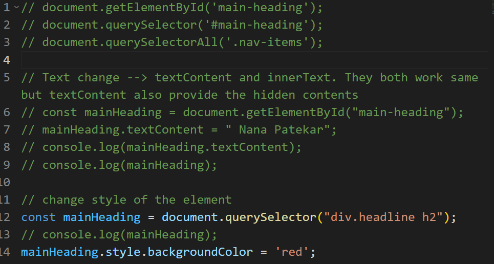

get and Set Attributes


innerHTML:


DOM TREE(Traversing from parent to child and vice versa):- Properties:
- parentNode
- childNodes
- nextSibling
- children


classList:


static list vs live list:


getBoundingClientRect:


Events:

here the value of this will be equal to window object, if we had used any other function then the value of this would be the element itself